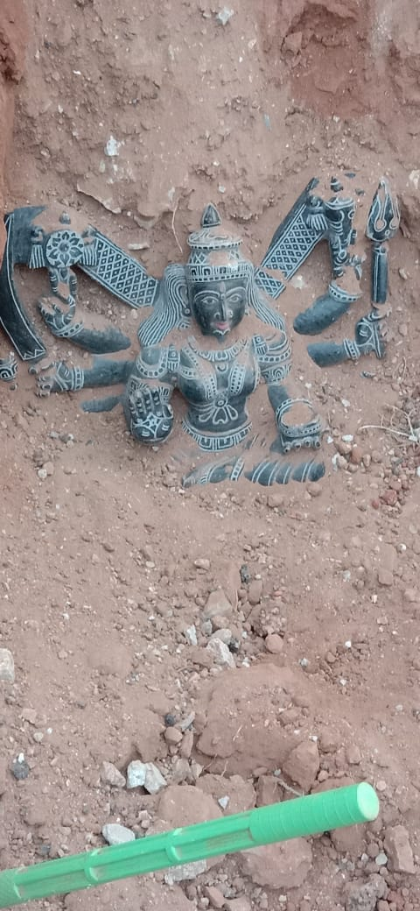
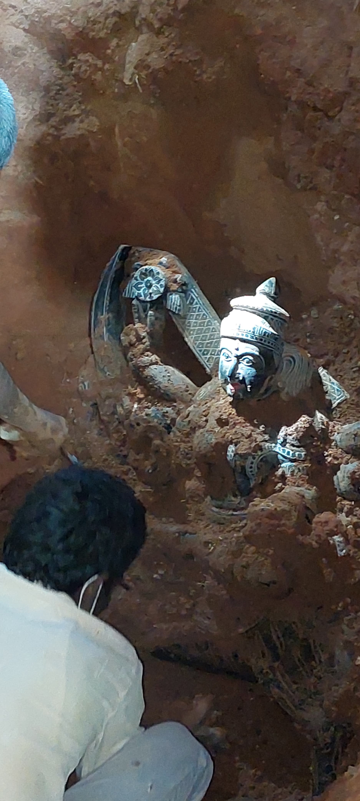
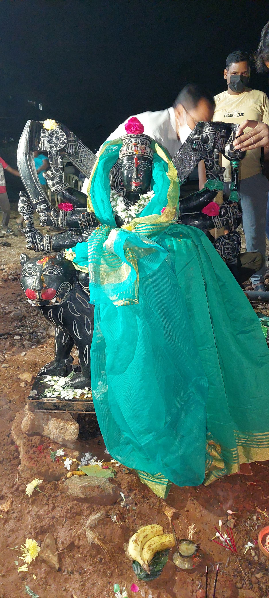

Shri Siddhi Dhatri Shyamala Devi Temple is a sacred sanctuary located in the Lakshmi Vihar Phase-1, Nallagandla area of Hyderabad. The temple is dedicated to Goddess Siddhi Dhatri Shyamala Devi, a revered manifestation of the Divine Mother.
On 10 February 2022, during excavation work in the Lakshmi Vihar Phase-1 Colony, a sacred idol of Goddess Siddhi Dhatri Shyamala Devi was discovered beneath the ground. The discovery was regarded by devotees as a divine blessing and a spiritually significant event. Inspired by devotion and faith, local residents came together to establish a temple dedicated to the Goddess. Today, the temple serves as a center for worship, daily poojas, festivals, and spiritual growth.
The sacred idol of Goddess Siddhi Dhatri Shyamala Devi was discovered during excavation work.
Devotees and residents united to establish a shrine dedicated to the Goddess.
The temple continues to welcome devotees through daily poojas, special celebrations, and community worship.
A visual journey capturing the sacred discovery of Goddess Siddhi Dhatri Shyamala Devi on 10 February 2022 and the beginning of her worship.

The sacred idol of Goddess Siddhi Dhatri Shyamala Devi was first revealed beneath the ground during excavation on 10 February 2022.

Devotees and local residents witnessed the gradual uncovering of the sacred idol, a moment remembered as a blessed and historic event.

Following the discovery, the Goddess was respectfully adorned and worshipped, marking the beginning of a new spiritual journey for the temple and its devotees.